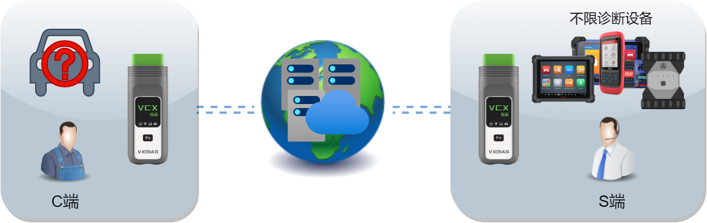
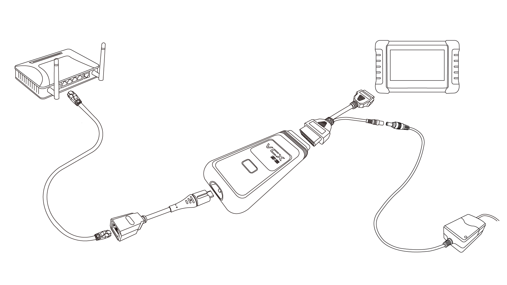

Nota

DoNet O modo de Diagnóstico Remoto Compatível requer servidor e cliente cada um usando 1 M-Auto VCI Dispositivo，pode realizar qualquerMarcaDiagnóstico Remoto do Dispositivo。
este documentointroduçãoDiagnóstico Remoto CompatívelUtilizaçãoPasso。
Requisitos necessários
Servidor
HardwareLigaçãoMétodocomoabaixo：

- [VCXO dispositivo através de REMOTE-OBD AdaptadorexternoAlimentaçãoAlimentação。…]
- [DiagnósticoO dispositivo através de REMOTE-OBD AdaptadorLigação。…]
- [ConfirmeDispositivo com ligação estável e rápida à internet（Recomenda-se cabo de redeLigaçãoRouter de Banda Larga）。…]
Cliente
- [VCXDispositivoLigaçãoVeículo。…]
- [ConfirmeO veículo utiliza uma rede estávelAlimentaçãoAlimentação。…]
- [ConfirmeDispositivo com ligação estável e rápida à internet（Recomenda-se cabo de redeLigaçãoRouter de Banda Larga）。…]
fase de preparação
ServidoreClientedividido emdiferentesseguirabaixoPassoConfigurar Ligação à Internet
1. Siga no WeChat
Digitalize o código QR ou WeChatPesquise “DoNet Diagnóstico RemotoPlataforma” e siga。

2. AbraPlataforma de Diagnóstico Remoto
em DoNet no menu do WeChatClique em[Diagnóstico Inteligente]Aceder à plataforma de diagnóstico remoto。

3. Configurar informações do utilizador
Na primeira utilização, configure as informações do utilizador，Indique o número de telemóvel para contacto。

4. Configurar informações do dispositivo
Na primeira utilização, é necessário vincularVCXDispositivoNúmero de série。

5. Configurar Ligação à Internet
O diagnóstico remoto requer ligação à internet，Clique em[Configurar Ligação à Internet]。

6. SeleccioneModo de ligação à internet
SeleccioneModo de ligação do dispositivo，seguindo o assistenteConcluídoconfigurar rede。

Certifique-se de que a internetLigaçãoestável e rápida，latência do dispositivo inferior a100ms，Recomenda-se prioritariamenteSeleccionerede com fio。